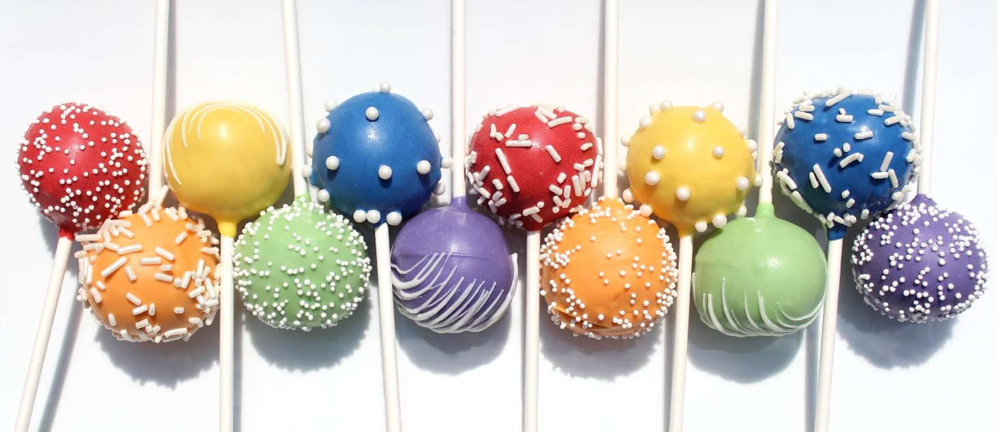

Cake Pops
Cake Pops are basically crushed up pieces of cake that you mix with frosting and then coat candy. They are delicious but very, very sweet!
Ingredients:
- 18.25oz box of Cake Mix
- 9in-by-13in cake pan
- Two Baking Sheets
- Wax Paper
- Large Mixing Bowl
- 16oz contianer of ready-made frosting
- Large metal spoon
- Plastic wrap
- 48oz candy coating
- Microwave safe plastic bowl
- 48 lollipop sticks
- Styrofoam Block
Instructions
- Bake the cake as directed on the box, using the 9-by-13-in (23-by-33-cm) cake pan. Let cool completely.
- Once the cake has cooled, get organized and set aside plenty of time (a couple of hours) to crumble, roll, and dip 48 cake pops. Line the baking sheets with wax paper.
- Crumble the cooled cake into the large bowl. You should not see any big pieces of cake.
- Add up to three-quarters of the container of frosting to the bowl. (You will not need the remaining frosting. Save it in the refrigerator for a later use.) Mix it into the crumbled cake, using the back of the large metal spoon, until thoroughly combined. If you use the entire container, the cake balls will be too moist.
- The mixture should be moist enough to roll into 1 1/2-in (4-cm) balls and still hold a round shape. After rolling the cake balls by hand, place them on the prepared baking sheets and let them rest for about 20 minutes before chilling.
- Cover the baking sheets with plastic wrap and chill for several hours in the refrigerator, or place them in the freezer for about 15 minutes. You want the balls to be firm but not frozen.
- Place the candy coating in the deep microwave-safe bowl. These bowls make it easier to cover the cake balls completely with candy coating while holding the bowl and without burning your fingers. The coating should be about 3 in (7.5 cm) deep for easier dipping. I usually work with about 16 oz (455 g) of coating at a time.
- Melt the candy coating, following the instructions on the package. Microwave on medium power for 30 seconds at a time, stirring between each interval. (You can also use a double boiler.) Make sure you do not overheat the coating.
- Now you’re ready to dip. Take a few cake balls out of the refrigerator or freezer to work with, keeping the rest chilled. If they’re in the freezer, transfer the rest of the balls to the refrigerator at this point so they stay firm but do not freeze.
- One at a time, dip about 1/2 in (12 mm) of the tip of a lollipop stick into the melted candy coating, and then insert the lollipop stick straight into a cake ball, pushing it no more than halfway through.
- Holding the lollipop stick with cake ball attached, dip the entire cake ball into the melted candy coating until it is completely covered, and remove it in one motion. Make sure the coating meets at the base of the lollipop stick. This helps secure the cake ball to the stick when the coating sets. The object is to completely cover the cake ball and remove it without submerging it in the coating more than once. If you do resubmerge the cake pop, the weight of the candy coating can pull on the cake ball and cause it to get stuck in the coating.
- The thinner the consistency of your coating, the easier it will be to coat the cake pops. (If you find that your coating is too thick, add some vegetable oil or paramount crystals to help thin it and make the coating more fluid.)
- When you remove the cake pop from the candy coating, some excess coating may start to drip. Hold the cake pop in one hand and use the other to gently tap the first wrist. Rotate the lollipop stick if necessary to allow the excess coating to fall off evenly, so one side doesn’t get heavier than the other. If you didn’t completely dunk the cake pop, this method of tapping and rotating generally takes care of that. The coating will slowly slide down the surface of the cake ball until it reaches the lollipop stick.
- If too much coating surrounds the base of the lollipop stick, you can wipe the excess off with your finger. Simply place your finger on the stick right under the cake ball and rotate the pop, allowing any excess coating to fall off and back into the bowl. When most of the excess coating has fallen off and it is no longer dripping, stick the cake pop into the Styrofoam block.
- Repeat with the remaining cake balls and let the pops dry completely in the Styrofoam block.
- Enjoy!